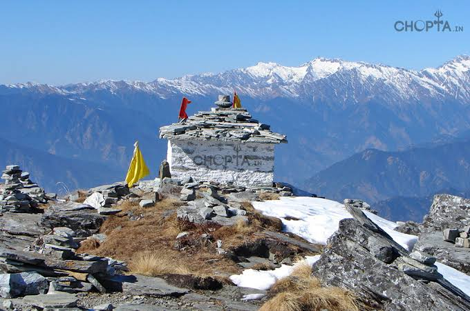
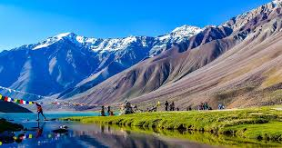
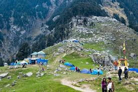

Location:Uttarakhand
Terrain:Rocky trail with forrest
Difficulty:🔴Hard
Alt:4,000 m
Best Time:March–May
Status:⭐ Dream Trek
Budget required: ₹15,000

Location:Himachal
Terrain:Valleys + Glacier
Difficulty:🟡Moderate
Alt:4,200 m
Best Time:July–September
Status:🔥 Next Year for sure!
Budget required: ₹17,000

Location:Himachal
Terrain:Forest + Rocky
Difficulty:🟡Moderate
Alt:2800
Best Time:March-June
Status:Not accomplished yet
Budget required: ₹10,000
Research the trail before you begin. Check the distance, difficulty, weather conditions, and estimated time to complete the trek. Knowing your route helps you stay prepared and reduces the risk of getting lost.
Learn about the type of terrain you will be trekking on, such as rocky paths, forests, snow, or steep slopes. Understanding the trail helps you choose the right footwear, pace yourself, and stay safe throughout the journey.
Carry important items such as enough water, snacks, a first-aid kit, a map, a flashlight, extra clothing, and a fully charged phone. Packing the right gear ensures you are prepared for unexpected weather or emergencies during your trek.